Inverno
- Dicembre
- Gennaio
- Febbraio
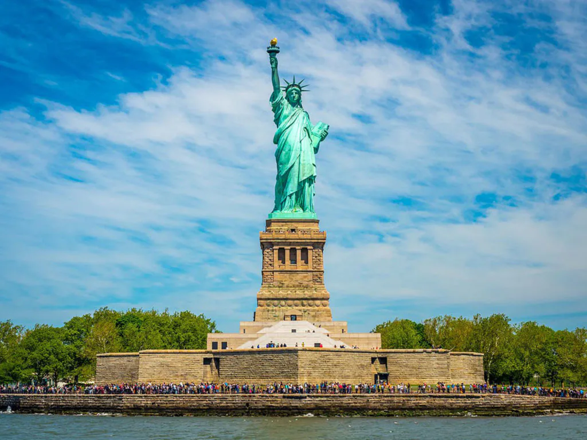
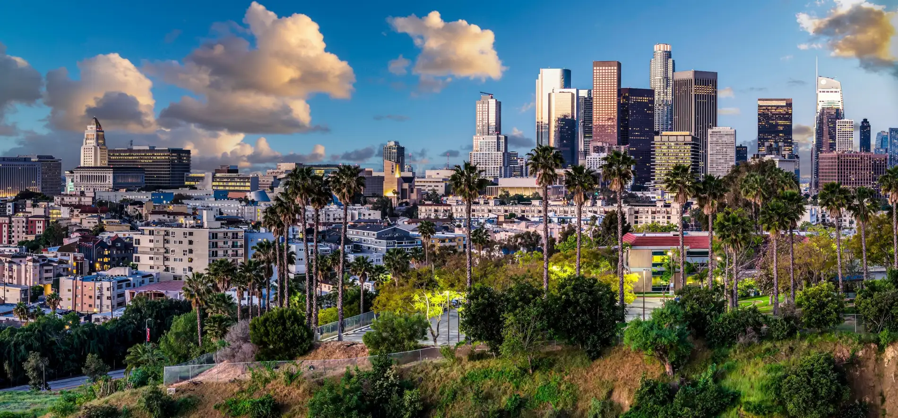
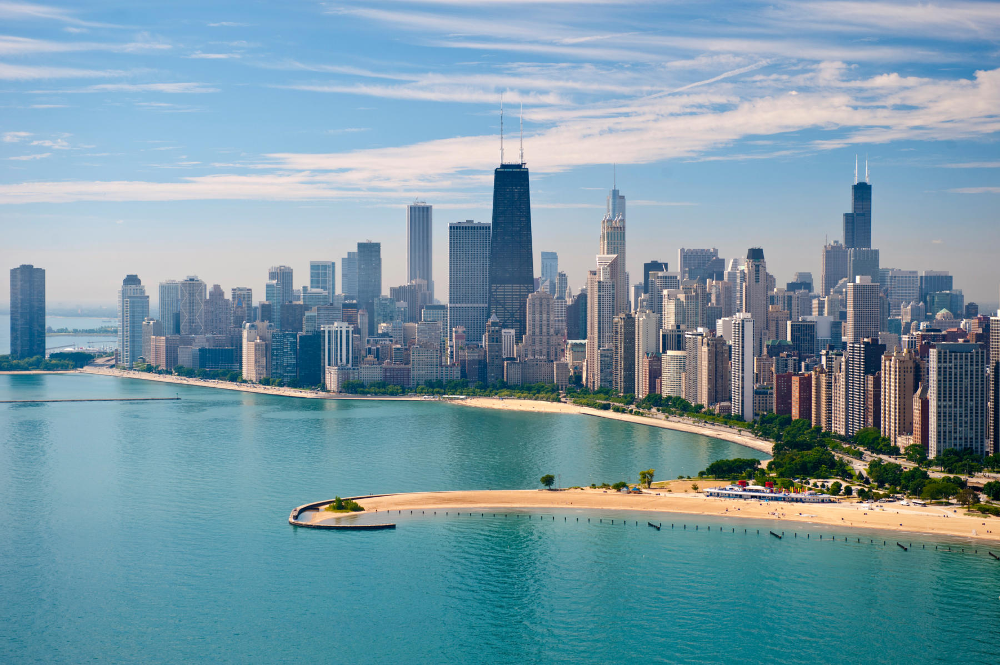
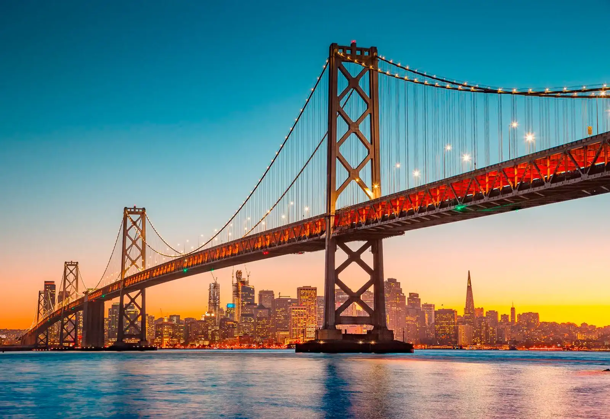
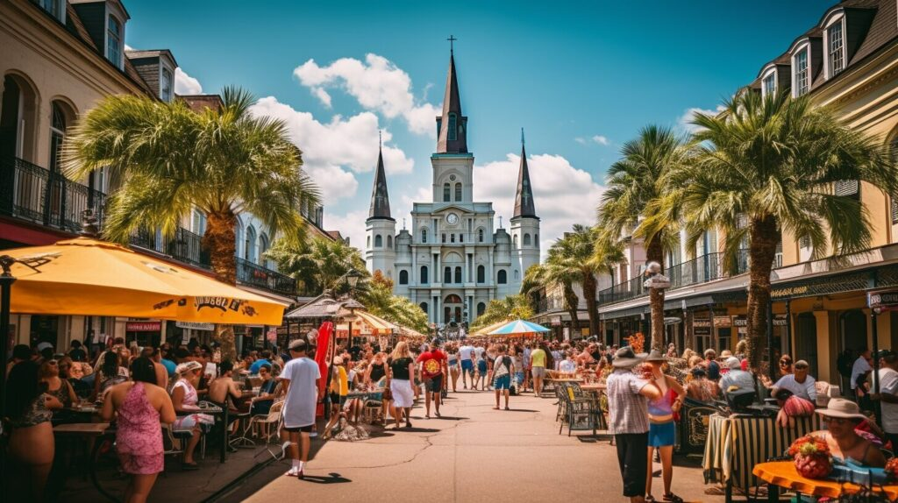
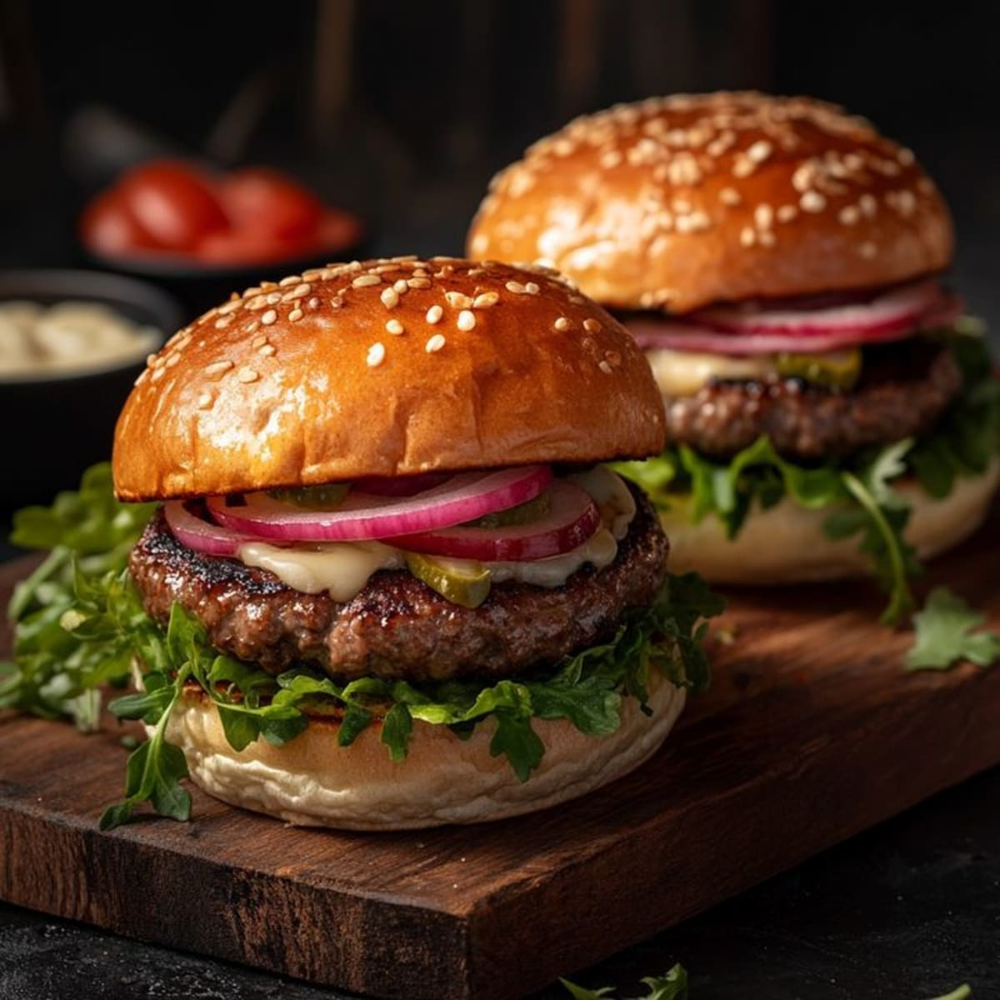
Panino con carne grigliata e condimenti a scelta, diventato uno dei piatti più conosciuti del Paese.
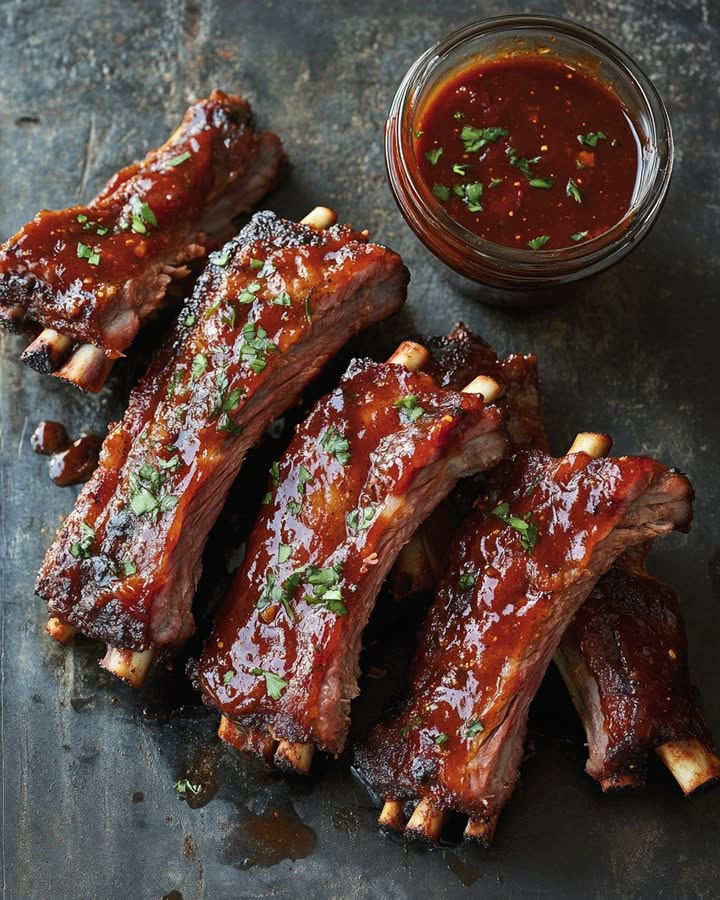
Costine cotte lentamente e insaporite con salsa barbecue, con varianti regionali in tutto il Paese.
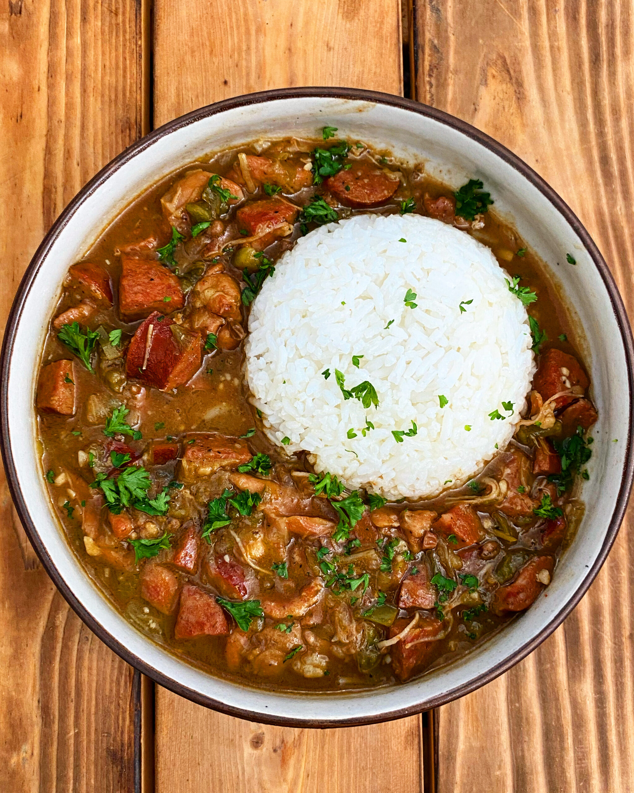
Zuppa o stufato creolo con verdure, spezie e ingredienti come gamberi o salsiccia, spesso servito con riso.
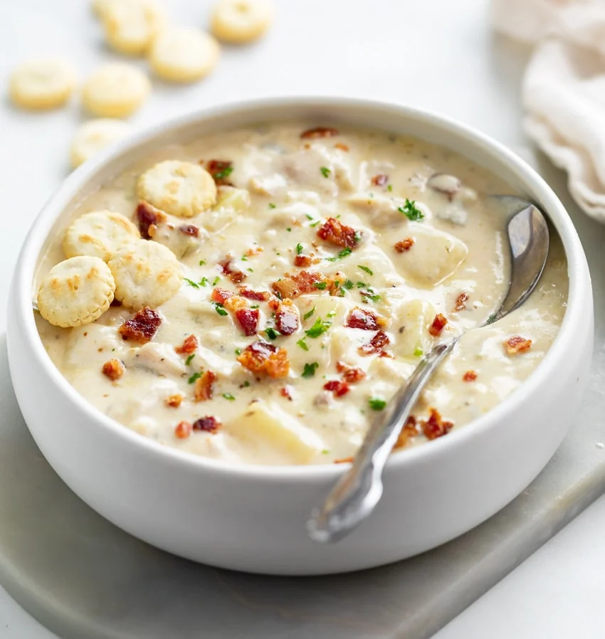
Zuppa cremosa di vongole e patate, tradizionalmente associata alla costa nord-orientale.
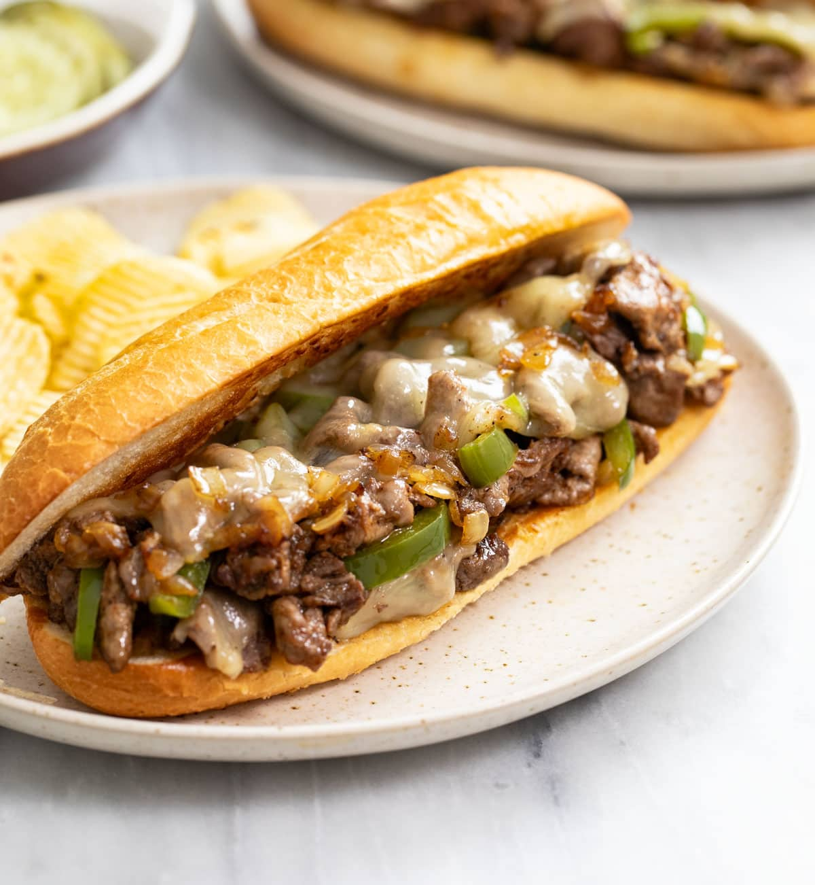
Panino caldo con fettine sottili di manzo e formaggio fuso, nato a Philadelphia.
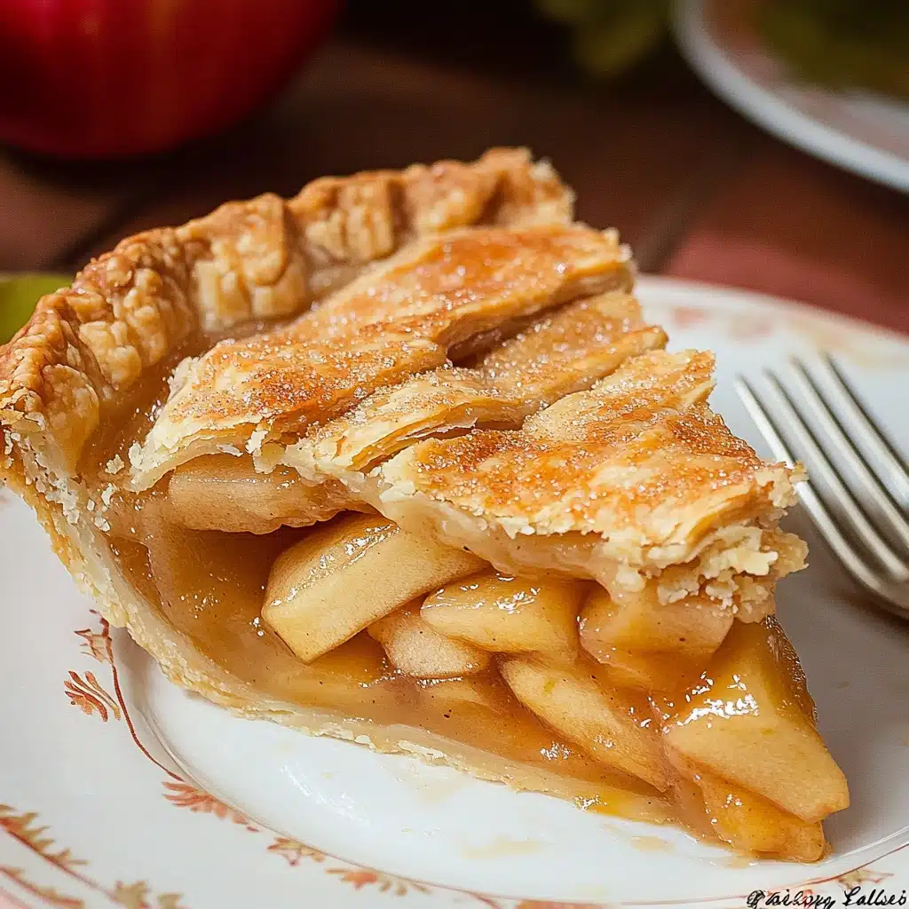
Torta di mele speziata racchiusa in una crosta di pasta, spesso servita tiepida.